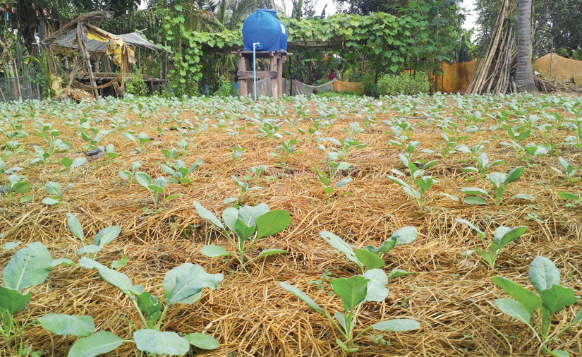

types of crops, we keep the soil nutrients balanced. Also, by interchanging crops that grow deep in the soil with those that grow shallowly, we make sure nutrients in all parts of the soil get used. Shallow-rooted crops take nutrients from the top soil, while deep-rooted crops take them from the bottom. Legumes and rest periods in the rotation also help to keep the soil fertile. This is because they add more nutrients to the soil. Therefore, crop rotation is a good way to reduce weeds as well as to keep our soil healthy and productive.
(iii) Use of herbicides: These are chemical substances that can kill weeds. They can be used in recommended amounts to control weeds without causing much soil degradation.
(iv) Use of mulch: Mulch is like a grass blanket that we put on the ground to keep weeds down and add organic matter to the soil (refer to Figure 4.5).

Accumulation of excessive salts in soil:
Soil has salts that come from rocks and rotting plants. Rain usually leaches salts away. But in dry areas, there is no enough rain to do this. This can cause salts to build up in the topsoil. Too much salt can make the soil lose its fertility. This is because the salts can suck water out of plant roots. They can also change the soil’s pH level. To fix this, we can use good farming practices to stop salt from building up. One way is to avoid excessive watering so